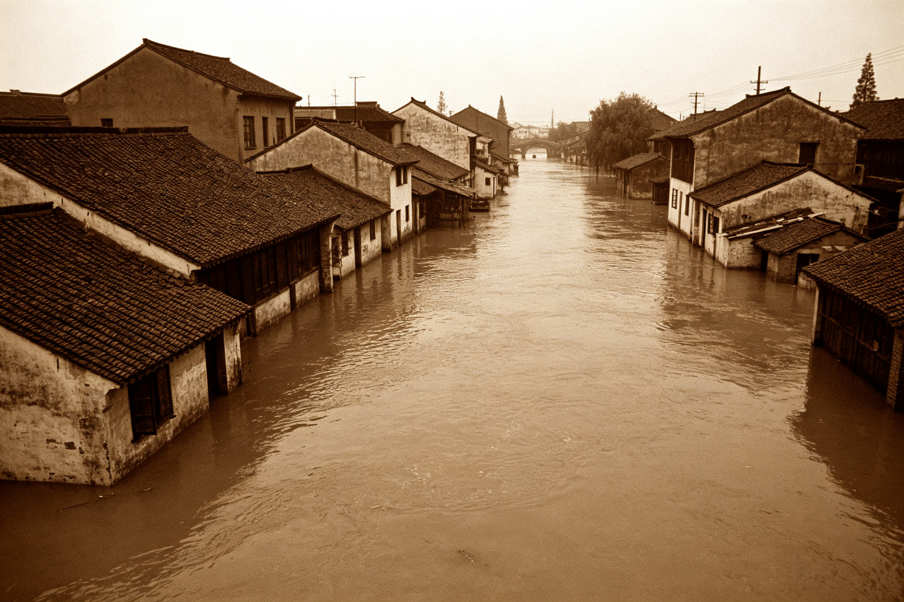

景月镇2003年抗洪救灾工作纪实
发布时间：2003-07-20 | 来源：景月镇党政办 | 阅读：████次
2003年7月，景月镇遭遇了历史罕见的特大洪水。受持续强降雨影响，景月湖水位暴涨，超过警戒水位2.3米，沿湖多个村庄受灾。在镇党委、政府的坚强领导下，全镇干部群众众志成城，投入抗洪救灾斗争，最大程度保障了人民群众生命财产安全。
此次洪水造成井湾村、沉湖村、石桥村等沿湖村庄不同程度受灾。截至7月18日，全镇共转移安置群众████人，倒塌房屋████间，直接经济损失约████万元。
灾后，镇政府迅速启动重建工作，发放救灾物资，组织群众生产自救。在上级部门的支持下，受灾群众于当年年底前全部搬进新居。目前，全镇生产生活秩序已恢复正常。

2003年7月，景月镇洪水淹没街道（资料照片）
2003年洪水遇难人员名单（部分）
以下名单根据镇民政办统计整理，部分信息因家属要求不予公开。如有疑问，请联系镇民政办。
| 姓名 |
性别 |
年龄 |
所在村 |
备注 |
| 陈秀英 | 女 | 68 | 井湾村 | 退休教师 |
| 王大根 | 男 | 52 | 井湾村 | 村民 |
| 李小宝 | 男 | 12 | 井湾村 | 学生 |
| 张国强 | 男 | 45 | 沉湖村 | 村支书 |
| 刘桂兰 | 女 | 60 | 沉湖村 | 村民 |
| 赵小虎 | 男 | 28 | 石桥村 | 个体户 |
| 孙美华 | 女 | 35 | 石桥村 | 村民 |
| 周德发 | 男 | 72 | 井湾村 | 退休干部 |
| 吴秀珍 | 女 | 55 | 沉湖村 | 村民 |
| 郑海涛 | 男 | 32 | 井湾村 | 镇水利站工作人员 |
| 钱小芳 | 女 | 8 | 石桥村 | 学生 |
| 冯长根 | 男 | 65 | 沉湖村 | 村民 |
| ……另有████人信息因家属要求不予公开…… |
说明：本名单仅为部分公开信息。完整遇难人员名单及详细档案存放于镇史馆机密档案室，需凭相关证明查阅。镇民政办联系电话：0572-8866001。
（注：据多位村民回忆，洪水当晚井湾村方向曾传来异常声响，疑似山体滑坡。但镇地质站勘察后未发现滑坡痕迹，具体原因待查。）